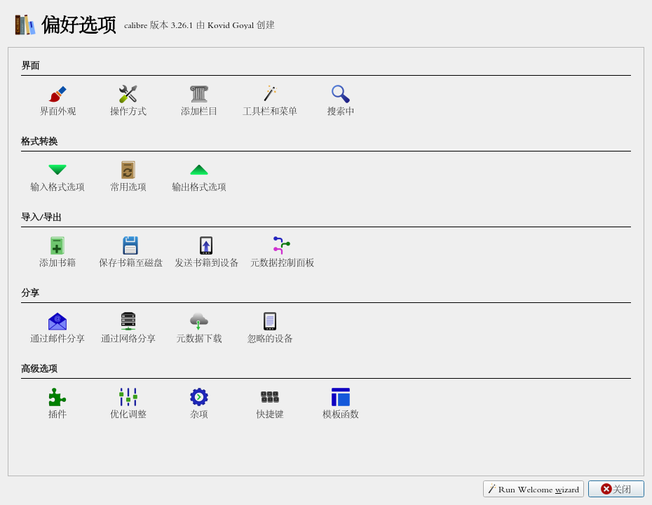
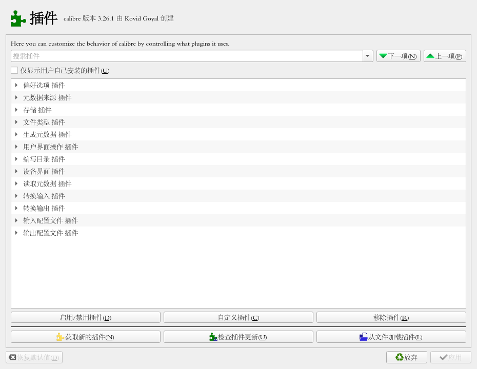
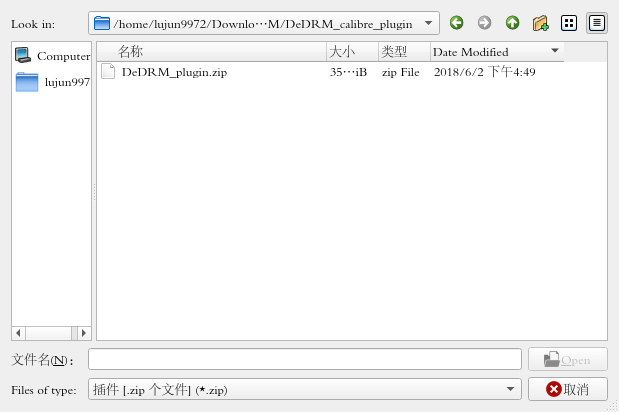

使用Calibre移除电子书中的DRM
目录
安装 Calibre
Calibre是一款Linux上的电子书管理软件，在archlinux下可以直接用pacman安装
sudo pacman -S calibre --noconfirm
resolving dependencies... looking for conflicting packages... Packages (1) calibre-3.26.1-1 Total Installed Size: 95.67 MiB Net Upgrade Size: 0.00 MiB :: Proceed with installation? [Y/n] (0/1) checking keys in keyring [----------------------] 0% (1/1) checking keys in keyring [######################] 100% (0/1) checking package integrity [----------------------] 0% (1/1) checking package integrity [######################] 100% (0/1) loading package files [----------------------] 0% (1/1) loading package files [######################] 100% (0/1) checking for file conflicts [----------------------] 0% (1/1) checking for file conflicts [######################] 100% (0/1) checking available disk space [----------------------] 0% (1/1) checking available disk space [######################] 100% :: Processing package changes... (1/1) reinstalling calibre [----------------------] 0% (1/1) reinstalling calibre [----------------------] 0% (1/1) reinstalling calibre [----------------------] 0% (1/1) reinstalling calibre [----------------------] 0% (1/1) reinstalling calibre [----------------------] 0% (1/1) reinstalling calibre [----------------------] 0% (1/1) reinstalling calibre [#---------------------] 6% (1/1) reinstalling calibre [##--------------------] 11% (1/1) reinstalling calibre [###-------------------] 16% (1/1) reinstalling calibre [####------------------] 21% (1/1) reinstalling calibre [#####-----------------] 27% (1/1) reinstalling calibre [########--------------] 37% (1/1) reinstalling calibre [#################-----] 80% (1/1) reinstalling calibre [####################--] 92% (1/1) reinstalling calibre [#####################-] 99% (1/1) reinstalling calibre [######################] 100% :: Running post-transaction hooks... (1/4) Updating icon theme caches... (2/4) Arming ConditionNeedsUpdate... (3/4) Updating the desktop file MIME type cache... (4/4) Updating the MIME type database... Unknown media type in type 'all/all' Unknown media type in type 'all/allfiles'
安装插件
Calibre本身没有移除DRM的能力，需要借助第三方插件来实现：
下载 DeDRM_tools
wget https://github.com/apprenticeharper/DeDRM_tools/releases/download/v6.6.1/DeDRM_tools_6.6.1.zip
解压zip包
unzip -d DeDRM DeDRM_tools_6.6.1.zip
启动 Calibre
calibre
选择
偏好选项->插件->从文件加载插件

选择
DeDRM_calibre_plugin中的DeDRM_plugin.zip
- 重启 Calibre
移除DRM
安装插件后，在添加书籍的时候，Calibre会自动去掉DRM。而且无法手工对已经添加的书籍移除DRM。
如果要移除已经添加书籍的DRM，则需要先把书籍删掉后，在重新添加。